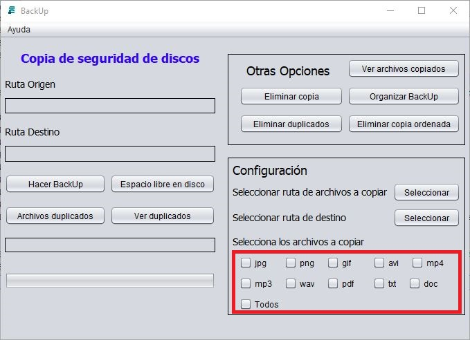

En el caso de que ya se haya hecho una copia de seguridad para borrarla, borrar los archivos duplicados, borrar la copia ordenada u ordenar la copia, se debe introducir la ruta de la carpeta en la que se ha hecho la copia, el programa se ocupa de comprobar si está o no la carpeta.